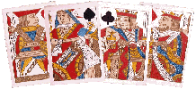
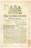
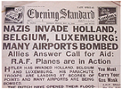
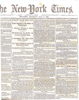
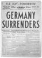
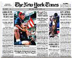
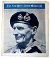

Design Awareness
By Mark Seymour
Paradigms are much more than twenty cents
(See the author's bio for the preceding articles in this series.)
Now that you've gathered your text and images, identified your files, and gotten your approvals and translations, you're ready to add structure to your data. To communicate effectively, you must create a hierarchy for your data, because our brains try to make order out of disorder instinctively.
Early examples are star constellations, where prehistoric humans turned
the jumble of stars in the night sky into the Bear and Orion's Belt and 86
other named patterns (see http://www.astro.wisc.edu/~dolan/constellations/constellation_list.html
for a complete list), and playing cards, the first decks of which date
back to 14th century Italy. (For the history of playing cards, check out
this British site, http://wopc.co.uk, or
this French museum, http://www.issy.com/statiques/musee/index.html.)
Related to the Tarot decks, but without their spiritual context, playing
cards are a very dense informational unit. Sortable by suit and color and
numeric position, these 56 ordered objects are used every day by people
who speak no common language and have no hereditary aristocracy; it is
hard to imagine another equally successful information system:

As a design challenge, try creating your own 'found' deck of cards (see http://www.communigate.co.uk/hants/playingcards/page4.phtml for more on the concept) or check out the latest 'high-tech' deck at http://www.zbyte.com.
In the five and a half centuries since Gutenberg (see http://www.gutenberg.de and http://www.dotprint.com/fgen/history1.htm), several major information paradigms have been created: the book, the newspaper, the magazine, and the catalog. Each has its own distinct method of presenting information, giving each a traditional, and expected, graphical look. Each serves a particular niche in the information system; as Umberto Eco noted, "Egyptians could carve their records on stone obelisks, Moses could not." (For his complete 1996 speech, From Internet to Gutenberg, see http://www.italianacademy.columbia.edu/pdfs/lectures/eco_internet_gutenberg.pdf.)
Most web sites emulate, with varying success, one or more of these four paradigms.
Books have traditionally been the boring, stuffy cousins of the
information family. Many now wear splashy full-color dust jackets or
soft covers, looking more like a poster than a traditional
leather-bound book: 
But their full-color covers are still wrapped around text-only guts, and almost all books still bear the half-title page, title page, copyright page, contents page, body-of-text organizational scheme developed hundreds of years ago. Most are set in one or two fonts, with little graphical distinction except on the chapter opening pages, and many still carry a quaint notion, the colophon, at the back, where the designer mentions the font used, often with the history of the font itself. The information in most books is very linear, yet the table of contents or the index (found in most non-fiction books), like the navigation bar or the search box in a website, allow you to quickly find a section of interest or a particular reference.
Books published on-line or as downloadable files have generally retained this 'antique' look (see http://www.ebookmall.com/index.html for examples), and there are many sites that provide free versions, especially of older texts: Project Perseus and Project Gutenberg. Because books are often published off-line first, their on-line equivalents are forced to mimic the hard copy versions; unfortunately, the long-awaited "hypertext revolution" has yet to arrive.
Newspapers have always been a 'cool' medium. Here are pairs of London (1797 & 1940) and New York (1863 & 1945) newspapers, produced 143 and 82 years apart:
|   |   |
|  |
Even on-line, the Times adopts the familiar multi-column layout: http://www.nytimes.com/, and still looks like a newspaper. Note that the paper continues to use an 'Old English'-style (based on the German black letter fonts) font for its nameplate.
This has been a traditional font for newspaper names around the world for over 150 years, though the Times of London had Stanley Morrison design its own eponymous font (Times New Roman, of course) in 1931. (For a good overview of how the same font can be made subtly different, depending on the type foundry that produces it, see http://www.myfonts.com/fonts/linotype/times-roman/familytree.htm.)
Magazines, of course, have always been a 'hotter' medium. They began utilizing illustrations over text early on and, beginning in the 1940s, Life and Look made photography their primary information tool, often reducing the text to mere captions. Where early designs, like the 1944 'General Montgomery' issue of the New York Times Magazine, used photography alone, current magazine covers carry enough text references to articles inside, just as websites display prominent links to subpages, to qualify as tables of contents themselves, and often nearly obscure the underlying photo:

Catalogs are mailed out by the truckload (12.8 billion each year,
averaging 1.7 catalogs per home per week, according to Fast
Company), and exist on-line for nearly every product. Sears,
Roebuck was one of the first mass catalogs, beginning in 1888; see
http://www.bgsu.edu/departments/acs/1890s/sears/sears4.html for period
details. More recently, the famed J. Peterman catalog (the real one,
not the character from the Seinfeld show) was a high-art version of the
paradigm, using hand-drawn illustrations and florid prose to describe
the products. Recently reborn, its on-line version,
http://www.jpeterman.com/default.htm, mimics the flavor of the print
version almost perfectly. More commonly, catalogs use massive numbers
of product photos, often shown in elaborate environments, to promote
their wares, and their on-line versions usually match (see
http://www.ikea-usa.com/ to compare):
Each of these paradigms, book or newspaper or magazine or catalog, has its own manner of hierarchy, and readers expect them to follow the norms for the category; a book that's formatted like a catalog might be intriguing but, unless its content is of very high value, readers will give it only a cursory look. When creating complex and multi-purposed information sets, like an annual report or a university catalog or a website, however, you have more flexibility; different sections of the piece can have very different purposes and require a different data structure and, often, a very different design structure.
As noted earlier, there are on-line equivalents of existing hierarchical structures: navigation bars are similar to tables of contents, and search boxes are automated indices. The magazine cover model is used in websites every day, with the added advantage of image animation: http://www.kohler.com and http://www.luerssen.de/frame.html are good examples.
Putting It All Together
So, how do we create hierarchy? You need to determine a design matrix or grid, where items of similar importance or shared relevance (headlines at the same 'level', standard text information, charts and graphs, photograph captions, etc.) are formatted using the same (or a markedly similar) style. Style, of course, consists of all the visual characteristics of text (font, font weight, font style, and/or font color) plus a number of traditional markers that indicate hierarchy. These markers, for users of Western European languages, are pretty much the same: front, top, left, and size. That means that an object, whether it's text or a photo or an icon, that sits in front of another (think every web popup you see), or above another, or to the left of another, or is bigger than another, is more important. Similarly, something that is in a bolder font, or a stronger (not necessarily brighter) color, is more important; think of a red headline in bold versus a black one in a regular weight font. (Italics can sometimes raise something in importance, and sometimes diminish it, so be careful when using it or anything else from the Font Style menu in your design application.)
If you check the front pages of the newspapers above, you'll see they all correspond to this system. Web-based materials should obey the same structure, with the addition of 'first' or 'early' in the case of animations and movies. (Note that I do not include the use of ALL CAPS in the emphasis variants; the style has lingered over-long in newspaper headlines, and should be used sparingly, if at all. Text is far less readable in all capitals, as shown here, and 'screams' at the reader; it should be considered as impolite to use it in print or on-line as it is in emails.)
Deciding what is important is, oddly enough, the most important thing you can do. While that pretty photograph you commissioned, or the luscious chart you slaved over for hours, might seem important, is it important to your viewer? After they understand what your piece is about (are you providing a history of your city, selling a better mousetrap, or giving directions to the nearest hospital? Never assume that the reader already knows), having a clear method of finding specific information in your piece, whether a thorough table of contents or site map or index, is often what viewers hope for and rarely find.
Now slice and dice your carefully prepared data. Determine if a linear or some other information flow is appropriate to your material; working on-line, of course, lends itself to 'spider' or cross-linked information much more than a printed piece. Arrange each section and subsection using your chosen pattern, and decide what visual method you'll use to both connect them and distinguish them; that becomes your design matrix.
Once you've determined the design matrix, meaning that you've set the size, font, and color for a headline or body text or a chart caption or a footnote along with all the other data types in your files, along with the proportional size for photographs and illustrations, you can easily apply it to your data. Don't, of course, be rigid in your use of the matrix; some things need to be in a different font, or a different color, to set off their own importance. A change in data type (from text to charts and graphs, for instance; the annual report is a classic example) may force a change (layout, font structure, or color system) to a particular section; consistency can be the hobgoblin of design, as well. But changing everything, just for the sake of change, only leads to dizziness. While it can be visually tempting, changing the data structure or the fonts or even just the system of color usage, whether on every page or from section to section, can confuse and often infuriate the reader. While a pissed-off user who's already purchased your book or magazine might just never buy another one, the frustrated customer holding your expensively printed and mailed catalog or viewing your expensively designed web page will merely throw it away or click to another site, and all your investment of time and money in its production is instantly wasted.
Choose your fonts and color systems carefully. Sure, you can set a headline in 144 point Frutiger Bold Italic Outline in #FF9900 orange, and the text beneath it in 6 point Helvetica Narrow Underlined in #FF0000 red, all on a background of #009900 green, but do you have to? Use colors that don't fight each other, and keep the choices of colors, fonts, font sizes, and font weights to a minimum. Two fonts, one headline and one text, used in three font sizes each with, sparingly, bold and italics for each, gives you a lot of variations. Picking a small and delicate color palette (see http://www.visibone.com/color/, http://www.websitetips.com/color/, and http://www.webcolors.freeserve.co.uk/ for good web color systems) will keep the reader from going blind or gagging. Of course, there are situations (a good thrash site, for instance; see http://punkrockskateboards.com/stage_dive.htm or http://www.tenfootpole.com/) where anything goes, and the reader will welcome the best, or at least the weirdest, you can offer.
Now that you've applied your hierarchy system to the design of each section, make sure you step back (literally, if necessary) and see if the overall system is working. It is too easy to get caught up in manipulating the little bits (captions, headlines, footnotes, headers and footers, etc.) and not notice the glaring failure of the whole piece to provide a clear and understandable flow of information to the reader.
The Closing Note
Creating hierarchy can be as simple (using ever-smaller font sizes) or as complex (using cross-linking and color systems and font families and animated buttons) as you want. But not doing it thoughtfully, or consistently, can be as if you never did it at all. Providing the reader with an elegant, easy-to-use system of determining importance and navigating information is a solution worth the effort.
I started doing graphic design in junior high school, when it was still
the Dark Ages of technology. Bill Gates and Steve Jobs were both eleven
years old, and the state of the art was typing copy on Gestetner masters.
I've worked on every new technology since, but I still own an X-acto knife
and know how to use it.
I've been a freelancer, and worked in advertising agencies, printing
companies, publishing houses, and marketing organizations in major
corporations. I also did a dozen years [1985-1997] at Apple Computer; my
first Macintosh was a Lisa with an astounding 1MB of memory, and my current
one is a Cube with a flat screen.
I've had a website up since 1997, and created my latest one in 2004. I'm
still, painfully, learning how web design is different from, but not
necessarily better than, print.
![[BIO]](../gx/authors/seymour.jpg)